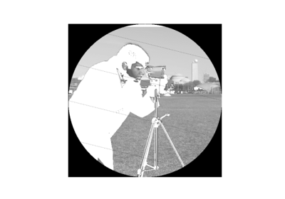
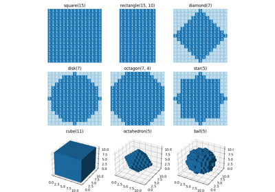
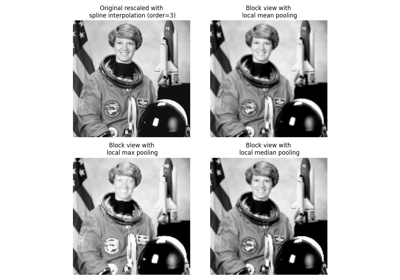
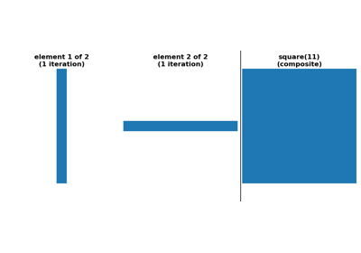

Source
SourceOperations on NumPy arrays¶

Using simple NumPy operations for manipulating images
Using simple NumPy operations for manipulating images

Generate footprints (structuring elements)
Generate footprints (structuring elements)

Block views on images/arrays

Decompose flat footprints (structuring elements)
Decompose flat footprints (structuring elements)